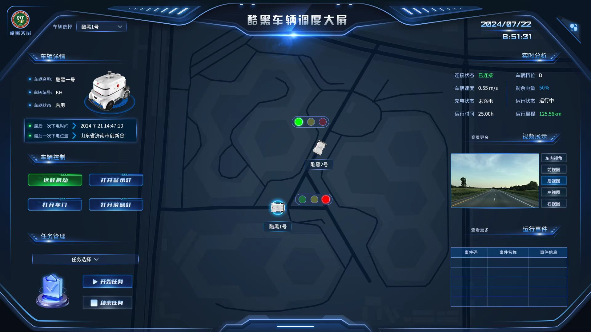
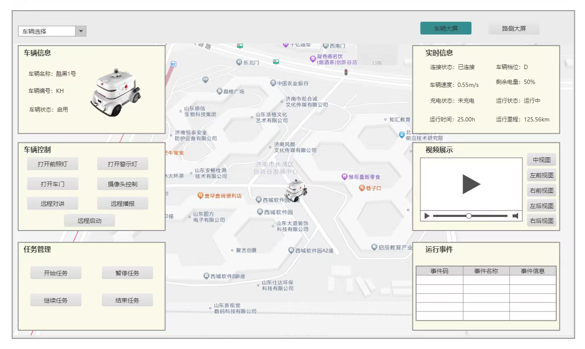

Vehicle Dispatch
Organizes real-time status, controls, tasks, camera views, location, and operating events around a selected vehicle.
REAL-TIME CLOUD CONTROL / VEHICLE AND ROADSIDE OPERATIONS
A unified cloud control interface connecting vehicles, roadside units, maps, video, controls, and operational events in real time.

This real-time cloud control platform supports coordinated management of vehicles and roadside units. Operators need to view object location, operating status, video, control actions, and event feedback within one interface.
Vehicles and roadside units carry different information, but both require a clear current object and operating context. The interface had to combine dense data, maps, video, and controls without confusing objects or overwhelming the operator.
Vehicle dispatch, roadside operations, video, and point-cloud maps form the platform’s core real-time workspace.

Vehicle dispatch and roadside control carry different information, but both follow the current object through one shared operating sequence.
Organizes real-time status, controls, tasks, camera views, location, and operating events around a selected vehicle.
Organizes unit status, signal configuration, live signal states, recognition results, roadside video, and events around the current intersection.
The prototype first defined the roles of the central map and side panels, allowing both dashboards to share one reading order while supporting different control tasks.

Vehicle or roadside-unit information, controls, and task entry points.
The map preserves the spatial context between the current object, nearby objects, and signals.
Live status, video, and events make the result of each action observable.
The vehicle dashboard prioritizes status, tasks, and remote control; the roadside dashboard adapts the same structure to signals, recognition results, and device feedback.

Switching from a vehicle to a roadside unit does not require relearning the interface. The map still holds spatial context, the left side handles the object and controls, and the right side carries live feedback.
The overall business framework came from the project requirements. I proposed and implemented the following interaction and layout improvements during design.
When multiple vehicles appear together, operators should not repeatedly match names, locations, details, and video. One selection establishes a persistent current object.
The main interface retains one preview and view switching. A dedicated modal opens all five feeds when needed, then returns the operator to the current vehicle context.

Using the site scan supplied by the project team, I refined color, brightness, and depth, applied the direction to the high-fidelity UI, and handed implementation parameters to engineering.

Receive the site point-cloud data.
Refine color, brightness, and spatial depth.
Validate contrast with interface information.
Provide executable visual parameters to engineering.
Review rotation, zoom, and detailed rendering.
Within a compact team, I delivered prototypes, two dashboards, high-fidelity UI, production assets, 3D assets, point-cloud visual direction, and implementation review.
In a five-person cross-functional team, I translated product requirements into the complete design chain from prototypes and two cloud-control dashboards to high-fidelity UI and engineering delivery. I also continued to propose functional and layout improvements during design.
After design handoff, I continued reviewing interface fidelity and point-cloud rendering, working with frontend engineers to refine implementation details.
The goal was not to display more data, but to make vehicles, devices, status, space, and controls work as one clear operational system.